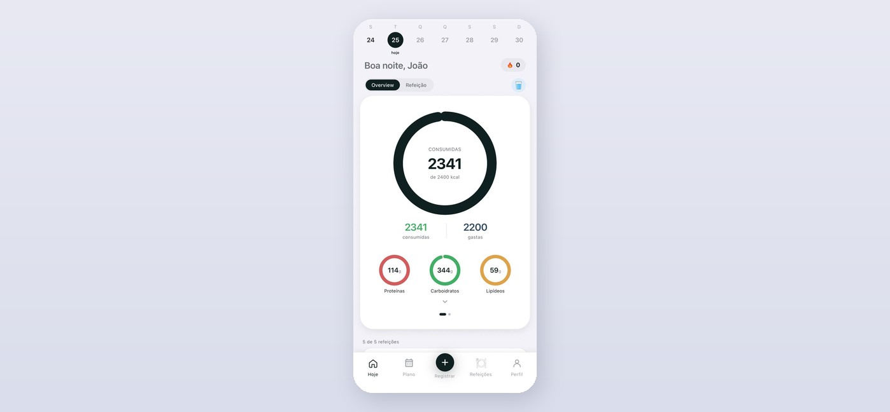
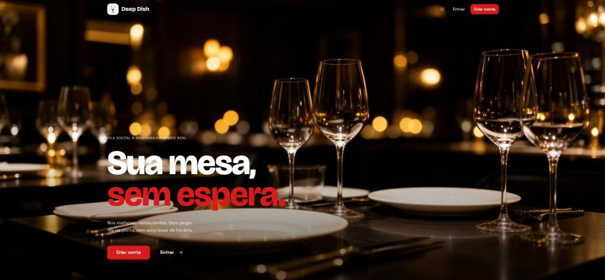
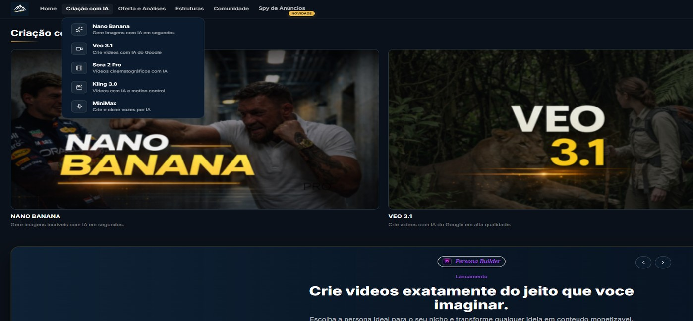
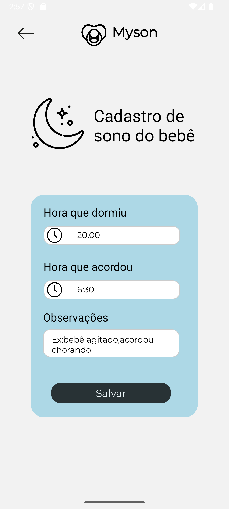
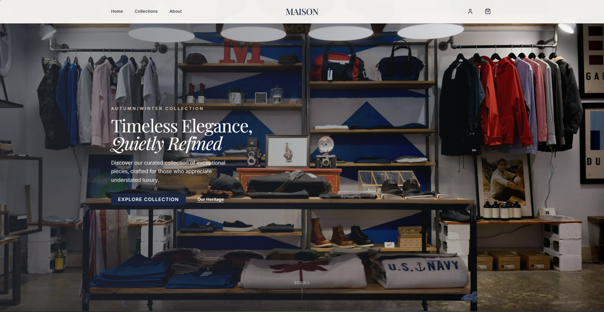

Projetos
06coisas que eu construí
-
Trophe Full-Stack Developer

Aplicativo de dieta flexível que vai além do registro de calorias: reconhece a refeição por foto, gera a estratégia alimentar do dia e a recalcula a cada refeição registrada. O diferencial é o motor de previsão de deslize, que cruza déficit calórico acumulado, tempo sem comer e o histórico do usuário para alertar antes que a dieta seja quebrada. Projeto em equipe no qual atuei como principal contribuidor, do backend ao app.
-
Deep Dish
Full-Stack Developer

Plataforma de fila inteligente e reserva de mesas para restaurantes. O cliente entra na fila remotamente e acompanha a própria posição em tempo real; o restaurante controla mesas, reservas do dia e equipe por um painel separado. Desenvolvido em equipe, com integração contínua no GitHub Actions e ambiente containerizado em Docker.
-
Escalonador Backend Developer

Plataforma de marketing de performance em produção. Atuei no módulo de geração de vídeos com IA: implementei o suporte a múltiplos workspaces, com CRUD próprio para cada um, permitindo que o usuário organize trabalhos em contextos separados em vez de acumular tudo em um só. Também integrei o Kling 3.0 como novo modelo de geração de vídeo.
-
MySON Mobile Developer

Aplicativo Android para acompanhamento de recém-nascidos. Registra rotinas de sono, alimentação e demais atividades do bebê, e organiza o histórico para que os pais consigam identificar padrões ao longo dos dias.
-
Maison-Olivier Full-Stack Developer

Loja de departamento de roupas de alto padrão, com catálogo, navegação por categorias e um design voltado para o público premium. Front-end em React consumindo uma API em Laravel.
-
HydroInsight Machine Learning
Modelo de previsão de qualidade da água em rios da África do Sul, feito para o EY AI & Data Challenge 2026. Combina imagens de satélite Landsat, variáveis climáticas do TerraClimate e medições in situ para estimar três indicadores — fósforo reativo dissolvido, condutividade elétrica e alcalinidade total. O pipeline vai do download dos dados à submissão, com engenharia de índices espectrais, agregações espaço-temporais e experimentos versionados em MLflow e DVC.